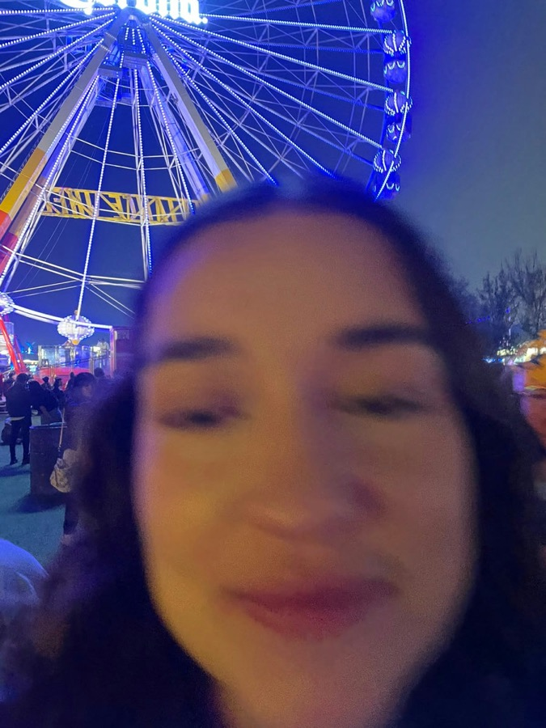

Cédula verificada*
♥ 72 lpm
Cédula verificada*
♥ 72 lpm
Médica · DoctoraDra. Sofía
Salva vidas de día, juzga fotos de noche. Cara de pocos amigos, corazón de oro (según ella, no).
🩺 Doctora🎡 Fan de la rueda😤 Ceño certificado🌙 Guardia nocturna
¿Quién es la Dra. Sofía?
Doctora de profesión y de vocación. Se toma la salud en serio y las selfies mucho menos. Diagnostica rápido, opina directo y tiene una expresión facial para cada nivel de gravedad. La de la foto es la de "esto no me lo habías dicho".
¿Qué hace?
- Atiende pacientesEscucha, diagnostica y receta. Sin drama, con datos.
- Resuelve emergencias de amigos"Me duele algo" a las 11 pm = consulta gratis.
- Detecta mentiras en 3 segundos"Sí tomo agua" no cuela.
- Se sube a la rueda de la fortunaSiempre. Es su terapia.
Superpoderes
Diagnóstico exprés95%
Paciencia con selfies12%
Sangre fría100%
Consultorio interactivo
¿Qué te pasa? Elige un síntoma y la Dra. Sofía te receta.
Nivel de molestia ahora
87%
Ficha técnica
ProfesiónDoctora
Lugar favoritoLa feria
Atracción favoritaRueda de la fortuna
Expresión de la fotoCeño nivel dios
Aprobó la selfieNo
Galería oficial
Toca una foto para verla grande.
